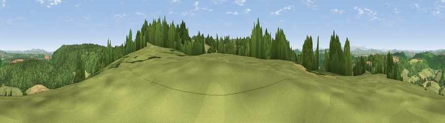

Viewpoint near Ruardean
#5092 in England · top 11% of its area beats it · near Ruardean · path 300 mWhere it is
The exact computed spot (SO 62950 18462). Click the marker for map links.
Public access: the nearest public right of way is about 300 m away — the final stretch may cross private land. Computed from Natural England's CRoW access layer and OpenStreetMap rights of way — not the legal definitive map. Always verify locally.
The view, rendered

A 360° render of this exact spot computed from the terrain model, tree cover and land cover — summer colours, afternoon light, calibrated against photographs of famous viewpoints. Real trees, hedges and buildings will differ in detail.
The panorama
Grey silhouette: terrain skyline in each direction (720 bearings, Earth curvature and refraction included). Dashed green: skyline with trees (+15 m) and buildings (+8 m) as obstacles. Blue strip: how far the ground is visible on each bearing.
Where the view opens
Wedge length = distance to the farthest visible ground on that bearing (vegetation-aware). Rings at 10, 25 and 50 km.
What fills the view
44% grassland · 39% woodland · 17% cropland
Angular shares of the visible panorama (visual magnitude), not map area. Landscape diversity 0.46 (0–1 Shannon).
Key numbers
More beautiful places nearby
The staircase of upgrades: each row has a higher view potential than everything closer. Driving times are estimates from straight-line distance, calibrated against real road routing — check an actual route before setting out.
| Place | Direction | Drive | Score |
|---|---|---|---|
| Viewpoint near Ruardean | SSW · 1 km | ~3 min | 74.2 |
| Chase Wood Hill | NW · 5 km | ~11 min | 77.6 |
| Viewpoint near Woolhope | N · 15 km | ~27 min | 80.7 |
| Viewpoint near Putley | N · 19 km | ~33 min | 80.9 |
| Viewpoint near Tarrington | N · 20 km | ~34 min | 81.4 |
| Garway Hill | WNW · 20 km | ~34 min | 84.6 |
| Millennium Hill | NNE · 25 km | ~40 min | 86.9 |
| Worcestershire Beacon | NNE · 30 km | ~47 min | 87.1 |
51.86350, -2.53945 · source: screening · position refined by local search. Computed location — check access rights before visiting.